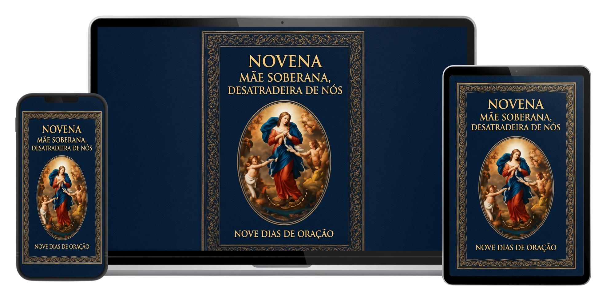

Espere, Nossa Senhora tem uma palavra para você
Eu quero desatar seus nós e estou aqui para te entregar seu milagre financeiro
Receba as orações da novena e Nossa Senhora vai te entregar o milagre que tanto pediu

Faça uma única contribuição de apenas
R$ 69,90
- 🙌 Desate todos os nós que impedem você de prosperar
- 🙏 Receba o milagre que Maria está enviando para você
- 📲 Acesse a novena imediatamente
Dar um voto de fé para Nossa Senhora
"Recebi meu milagre no sétimo dia da novena, estava sofrendo com constipação há 3 anos e agora estou curada."
— Maria do Carmo
"A minha causa na justiça foi contemplada e recebi o dinheiro suficiente para quitar o financiamento do meu apartamento."
— Adauto Bezerra
"Meu filho não falava comigo faz 10 anos, eu machuquei muito ele, meu coração doía muito por causa da distância. Graças à novena desatei o nó do perdão e meu filho vem me visitar com meus netos."
— Cátia Soares
Dar um voto de fé para Nossa Senhora